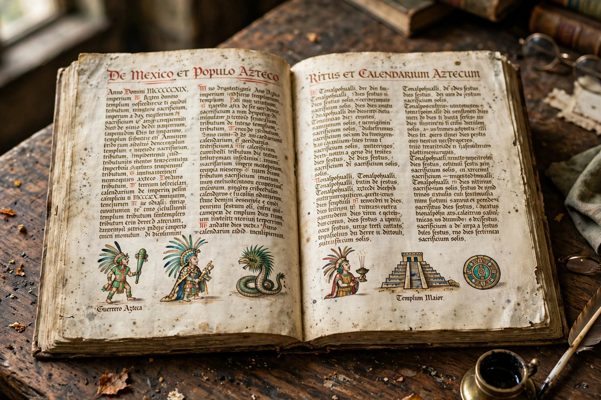

Florentine Codex
| Florentine Codex | |
|---|---|
| Full title | Historia general de las cosas de Nueva España |
| Compiler | Bernardino de Sahagún with Nahua scribes and informants |
| Date | c. 1545–1590 (final version c. 1577) |
| Language | Nahuatl and Spanish, in parallel columns |
| Extent | 12 books, c. 2,400 pages, nearly 2,500 illustrations |
| Repository | Laurentian Library (Biblioteca Medicea Laurenziana), Florence |

The Florentine Codex is the popular name for the most complete surviving manuscript of the Historia general de las cosas de Nueva España ("General History of the Things of New Spain"), a vast bilingual encyclopedia of Aztec (Nahua) civilisation compiled in sixteenth-century Mexico under the direction of the Franciscan friar Bernardino de Sahagún, working with Nahua elders, scribes and artists. Written in parallel columns of Nahuatl and Spanish and illuminated with nearly 2,500 hand-painted images, it is regarded as one of the most extraordinary products of the early modern encounter between Europe and the Americas.
Contents
The twelve books treat, in sequence: (1) the gods; (2) the calendar and festivals; (3) the origin of the gods and the afterlife, including Mictlan; (4) divination and the ritual calendar; (5) omens and superstitions; (6) rhetoric and moral philosophy — the formal speeches called huehuetlatolli; (7) the sun, moon and stars, including the myth of Nanahuatzin and the New Fire ceremony; (8) kings and government; (9) merchants and crafts; (10) the peoples of Mexico and their virtues, vices and diseases; (11) natural history — animals, plants, minerals; and (12) the Spanish conquest of Mexico as remembered by Nahua witnesses, the most famous indigenous account of the fall of Tenochtitlan.
Production and fate
Sahagún and his collaborators worked successively in Tepepulco, Tlatelolco and Mexico City over more than thirty years, drafting, cross-checking and revising with different panels of informants. In 1577 the Spanish crown, suspicious of works preserving indigenous religion, ordered the writings seized; the completed manuscript was nonetheless sent to Spain and by the 1580s had reached the Medici collections in Florence, where it remains in the Laurentian Library — the source of its modern name. It was effectively unknown to scholarship until the nineteenth century; major facsimiles appeared in the twentieth, and World History (UNESCO) recognition followed: in 2015 the codex was inscribed in UNESCO's Memory of the World Register.
Significance
Because the Nahuatl column preserves the voices of named Nahua intellectuals describing their own civilisation — its gods such as Tlaloc, its sacrificial rites, its speeches, proverbs, songs and medicine — the codex is the foundational source for the study of pre-conquest and early colonial Mexico, and a key document in the history of ethnography. The full English translation of the Nahuatl text by Anderson and Dibble (1950–1982) made it accessible to a worldwide readership.
See also: Bernardino de Sahagún · Mesoamerican religion